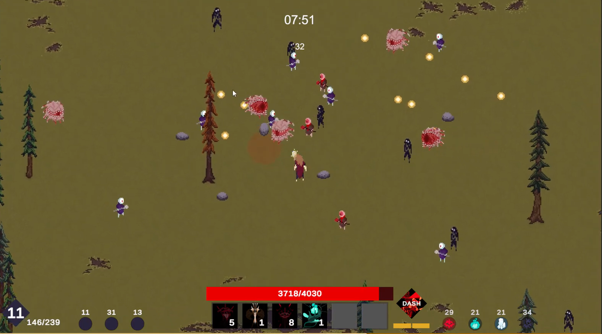
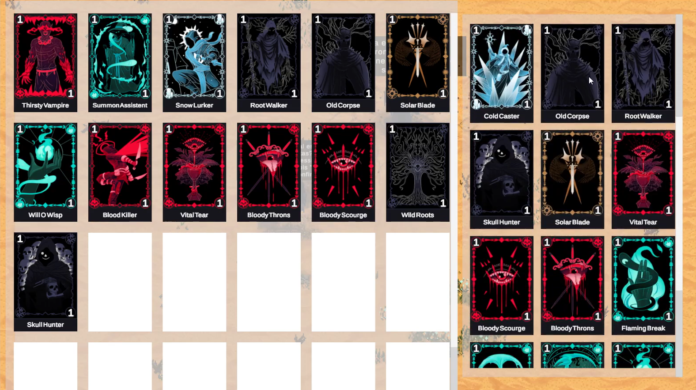
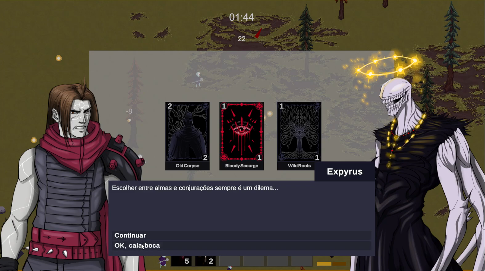

SUNRISE GHOST
Um jogo de sobrevivência de hordas singleplayer baseado no gênero action-roguelike. O jogador controla um guerreiro em uma arena fechada e deve enfrentar ondas implacáveis de criaturas com ataques automáticos, focando sua atenção no posicionamento estratégico, desvio de projéteis e na construção de sinergias perfeitas de habilidades para adiar o fim inevitável.

Mecânicas do Jogo
O vício do gênero está nos sistemas complementares de combate e evolução. Clique nos cards abaixo para expandir os detalhes de gameplay:
Ataque Automático
▼
O jogador foca unicamente na movimentação do guerreiro. As armas e magias disparam sozinhas em intervalos fixos de tempo (cooldowns), baseando-se na proximidade dos alvos ou na direção para onde o personagem está olhando.
Coleta de XP e Level Up
▼
Monstros derrotados deixam cair esferas de experiência na arena. Ao acumular XP e subir de nível, o jogo congela e oferece uma escolha aleatória de três ou quatro cartas de upgrades de habilidades para o guerreiro.
Hordas Procedurais
▼
A dificuldade escala com o tempo de partida. O sistema de spawn cria ondas progressivamente maiores, introduzindo criaturas velozes, inimigos com armadura e chefes de elite a cada minuto alcançado pelo jogador.
Sinergia e Evolução
▼
Sistema de builds inspirado em roguelikes. Combinar armas específicas de nível máximo com os itens passivos corretos desbloqueia a "evolução" do ataque, transformando golpes simples em poderes catastróficos que limpam a tela.
Minhas Funções
Desenvolvi os sistemas críticos de IA de perseguição de inimigos e a otimização de performance para centenas de objetos simultâneos na tela.
💻 PROGRAMAÇÃO (Otimização e Algoritmos)
▼
Implementação de um sistema de Object Pooling para lidar com centenas de monstros e projéteis ativos sem causar quedas de framerate. Programação do comportamento de bando dos inimigos usando vetores de direção simples para evitar gargalos na CPU.
📐 GAME DESIGN (Matemática e Ritmo)
▼
Balanceamento das tabelas de probabilidade de drops de cartas, calibração do ganho de atributos passivos (velocidade, dano, área de efeito) e estruturação da linha do tempo da partida (pacing) para que o jogador sinta uma evolução épica e satisfatória a cada minuto sobrevivendo.


Acesse o Projeto
Jogue a versão estável diretamente através do Itch.io ou confira o escopo e o mapa mental de evolução de habilidades no GDD.
Jogar no Itch.io ↗ Ler o GDD do Jogo 📄Gameplay em Ação
Assista a um trecho de gameplay em alta densidade, mostrando a sobrevivência nos minutos finais da arena contra chefes de elite.